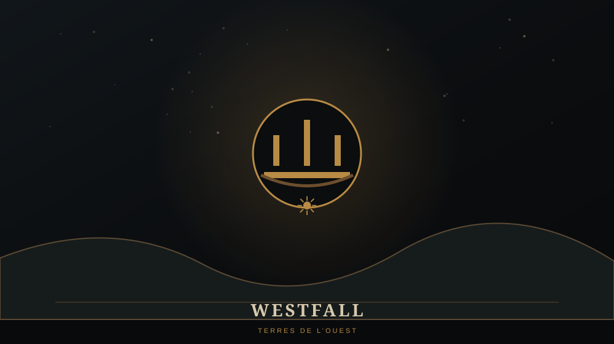

WESTFALL

🌾 WESTFALL
Westfall est une vaste région rurale située à l'ouest de Stormwind. Ses plaines et ses exploitations agricoles en font une zone essentielle pour nourrir la population et soutenir les armées du royaume.
C'est aussi le tout premier territoire que nous découvrons dans notre parcours Warcraft.
⚔️ PENDANT LA PREMIÈRE GUERRE
La campagne humaine commence ici. Llane confie au joueur la tâche de développer un centre agricole capable d'approvisionner l'effort de guerre, alors que des patrouilles orques ont déjà été signalées.
Ce début volontairement modeste rend l'escalade des missions suivantes beaucoup plus visible : quelques fermes et premières défenses précèdent une guerre qui finira par engloutir tout le royaume.
⚠️ LORE ULTÉRIEUR / SPOILERS
Après la Première Guerre, Westfall restera profondément lié à Stormwind. Dans World of Warcraft, la région porte les traces de crises économiques et sociales et devient notamment associée à la confrérie Défias et aux Deadmines.
Westfall existe dans l'univers Warcraft depuis le tout premier jeu de 1994.